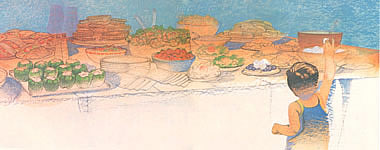

Nostalgia played a delicious role in MOM's picnic. So did Snackin' Crackers, Braised Chicken Wings, Blackberry Shortcakes. . .
As our editorial staff perused past copies to pick "the best of MOTHER" for issue 100, we kept running across mouth-watering recipes that we hadn't gotten around to enjoying for quite a while. "Why not," someone suggested, "use some of our old favorites to make up the menu for the upcoming editorial picnic?" And that's just what we did!
Snackin' Crackers and Cheese Spread
Relish Pears
Esther Shuttleworth's Beer Bread
Braised Chicken Wings
Leona's Fabulous Fruit Salad
Carrot-Date-Cabbage Slaw
Peanut Butter and Fruit Sandwiches
Tomato/Cheese/Onion Sandwiches
Blackberry Shortcakes
Sunshine Fruit Drink
(Each of the following recipes makes approximately six servings.)
2 cups whole wheat flour
1 teaspoon salt
1/2 cup sesame seeds
1/2 cup raw wheat germ
1/4 cup vegetable oil
1/2 cup cold water
Blend together the flour, salt, sesame seeds, and wheat germ, then add the oil and mix well with a fork. Pour in the cold water, mix, and continue to add water a tablespoon at a time until the dough is soft and workable. Turn the dough out onto a floured board and knead it for at least 10 minutes. Pull off a golf-ball-sized lump and roll it into a ball. Use a floured rolling pin to roll the dough out until it's cardboard thin. Heat an ungreased cast-iron skillet as hot as possible. Bake each cracker in the skillet until it's light brown on the bottom, then flip it over and just barely brown the other side (or bake the crackers on an ungreased cookie sheet in a 400°F oven, turning as described above to brown both sides). Allow the crackers to cool thoroughly on a towel before storing them in an airtight container.
Per two 2"-diameter crackers: 116 cal., 4 g pro., 13 g carbo., 6 g fat, 130 mg sodium. U.S. RDA: 17% thiamine.
From MOTHER NO. 49.
Mix together:
8 ounces cottage cheese
2 tablespoons onion, chopped very fine
2 tablespoons dill pickle, chopped fine
12 green olives, chopped
1/2 teaspoon Worcestershire sauce
1/4 teaspoon black pepper
Serve on crackers.
Per 2 tablespoons: 35 cal., 3 g pro., 1 g carbo., 3 g fat, 226 mg sodium, 2 mg chol.
From MOTHER NO. 49.
2 29-ounce cans Bartlett Pears
3/4 cup salad oil
1/3 cup vinegar
1-1/4 teaspoons salt
2 tablespoons capers
2 tablespoons chopped pimiento
3 tablespoons lemon juice
1 small onion, sliced
Drain the pear halves, reserving 1 cup of the syrup. Combine the syrup with the salad oil, vinegar, salt, capers, pimiento, lemon juice, and onion. Pour this mixture over the pears and chill. If covered and stored in the refrigerator, Relish Pears will keep for two weeks. Serve as a meat accompaniment.
Per 2 halves: 192 cal., 1 g pro., 19 g carbo., 14 g. fat, 229 mg sodium. U.S. RDA: 13% vit. A.
From MOTHER NO. 48.
2 tablespoons sugar
3 cups self-rising flour
1 12-ounce bottle of beer
1/2 cup melted butter
Mix sugar into flour, add beer while stirring (about 4 ounces at a time), pour the batter into three 3" by 6" pans, and drizzle 1/2 cup melted butter over the top. (The butter should form a 1/8" layer over the dough.) Bake for about 50 minutes at 350° F.
Per 2 slices: 270 cal., 3 g pro., 27 g carbo., 16 g fat, 42 mg chol. U.S. RDA: 12% riboflavin, 14% niacin.
From MOTHER NO. 55.
1 cup soy sauce
1 cup water
1/2 cup brown sugar
1 cup cooking sherry
4 scallions, chopped
1-1/2 pounds chicken wings
Mix first 5 ingredients in a large saucepan, add wings, heat to boiling, and simmer for 45 minutes. Remove chicken from sauce. Serve hot or cold.
Per 3-ounce serving: 450 cal., 21 g pro., 60 g carbo., 15 g fat, 3,000 mg sodium, 50 mg chol. U.S. RDA: 73% thiamine, 65% riboflavin, 140% niacin, 45% vit. B6, 14% calcium, 44% iron.
From MOTHER NO. 11.
2 pears
1 cup strawberries
1 large papaya
1 cup seedless grapes
2 tablespoons honey
1 bunch leaf lettuce
6 ounces ricotta cheese
2 bananas
Slice pears, strawberries, and papaya into good-sized chunks in a large bowl. Add seedless grapes, and drizzle a small amount of honey over the fruit. Toss lightly. Layer individual serving dishes with leaf lettuce and put a spoonful of ricotta cheese in each one. Arrange slices of banana around the cheese centers and spoon equal amounts of the fruit over each salad. Pour on Halvah Dressing.
3 tablespoons honey
1-1/3 cups low-calorie mayonnaise
2/3 cup sesame tahini
1 teaspoon vanilla extract or juice of half a lime
Mix well and store in the refrigerator.
Per cup of salad with dressing: 500 cal., 14 g pro., 72 g carbo., 22 g fat, 19 mg chol. U.S. RDA: 47% vit. A, 100% vit. C, 61% folacin, 39% calcium.
From MOTHER NO. 58.
2 cups finely grated carrot
2 cups finely grated cabbage
1/2 cup dates, pitted and finely chopped
1/2 cup raw sunflower seeds
1 cup low-calorie creamy salad dressing
4 green bell peppers
Gently mix all ingredients and stuff into the pepper shells, from which you've removed all the seeds and membranes.
Per 1/2 cup (with low-calorie salad dressing): 125 cal., 3 g pro., 19 g carbo., 5 g fat. U.S. RDA: 71% vit. A, 18% vit. C, 16% thiamine.
From MOTHER NO. 51.
Whole wheat bread
Natural peanut butter
Natural apple butter
Sliced bananas
Sliced strawberries
Raisins (optional)
For each sandwich, spread one slice of bread with peanut butter and the other with fruit butter. Add a layer of banana slices and a layer of sliced strawberries. Sprinkle with raisins.
Per sandwich: 340 cal., 11 g pro., 57 g carbo., 11 g fat. U.S. RDA: 45% vit. C, 22% thiamine, 18% niacin, 24% vit. B6.
From MOTHER NO. 52.
Several loaves of pita bread
Mayonnaise
Onion, minced
Garlic, minced
Sovex Hickory Smoked Yeast (see note)
Dr. Bronner's Bouillon (see note)
Monterey Jack or mild cheddar cheese
Tomatoes
Leaf lettuce
Chopped onion Alfalfa sprouts Slices of raw mushrooms, avocados, radishes, zucchinis, cucumbers, or yellow squash for garnish
Make a spread by combining mayonnaise, minced onion, minced garlic, a dash of hickory-smoked yeast, and a little of Dr. Bonner's Bouillon to taste. Cover inside of each bread pouch with spread; slip in a slice of Monterey Jack or mild cheddar cheese, a slice or two of tomato, a little chopped onion, and a little hand-torn leaf lettuce. Fill remaining space with alfalfa sprouts. Garnish with slices of raw vegetables.
Note: Sovex is a brewer's yeast seasoning with a baconlike taste. The bouillon is a vegetarian seasoning. Both are found in health food stores. Similar all-purpose seasonings can be substituted.
Per 2 pita halves: 500 cal., 32 g pro., 33 g carbo., 36 g fat, 1,000 mg sodium. U.S. RDA: 50% vit. A, 52% folacin, 90% calcium.
From MOTHER NO. 46.
1/2 cup shortening
2 cups flour
1/2 teaspoon salt
4 teaspoons baking powder
1/2 teaspoon cream of tartar
2 teaspoons sugar
2/3 cup milk
Whipped cream for garnish
Cut shortening into the flour, salt, baking powder, cream of tartar, and sugar. When pea-size lumps form, add the milk and stir until the dough "follows" the fork around the bowl. On a floured kneading board, roll out dough 1/2" thick, and cut with a biscuit cutter or the top of a water glass that's been dipped in flour before each cut. Bake on an ungreased cookie sheet for 10 minutes in a 450°F oven.
Grind or mash blackberries and sugar to taste. Split and butter the warm biscuits and ladle sweetened berries over biscuit halves. Serve with whipped cream.
Per 2 shortcakes: 300 cal., 4 g pro., 29 g carbo., 19 g fat, 305 mg sodium, 20 mg chol. U.S. RDA: 21% thiamine, 12% niacin.
From MOTHER NO. 5.
2 cups apple juice
1 cup apricot nectar
1 cup lemonade
1 cup pineapple juice
1 cup orange juice
Cinnamon and nutmeg to taste
Stir all ingredients together until thoroughly combined and pour over ice cubes.
Per cup: 120 cal., 1 g pro., 30 g carbo. U.S. RDA: 40% vit. C.
From MOTHER NO. 51.
|
 |
|
|